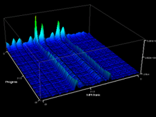

Libra is a tool for load-balance measurement, visualization, and analysis. It consists of three components:

PMPI Data Collection Layer: Our PMPI tool uses a simple model for load balance to collect per-process traces of time spent in regions between MPI calls.
Parallel Compression Layer: We use aggressive wavelet compression to pare down data collected by the PMPI layer to manageable sizes. Libra can compress application traces with 100:1 to 1000:1 compression, and compression time scales near-constantly with system size.
Client-side GUI for analysis and visualization: The Libra GUI supports scalable visualization of libra traces. Our traces files use a wavelet representation that enables incremental refinement of data. Users can perform cluster analysis on full traces or on a compact approximation of traces for added speed. Automated load-imbalance detection is in the works.
Publications
Todd Gamblin, Bronis R. de Supinski, Martin Schulz, Robert J. Fowler, and Daniel A. Reed. Scalable Load-Balance Measurement for SPMD Codes. In Supercomputing 2008 (SC08). Austin, Texas. November 15-21, 2008.
Todd Gamblin, Bronis R. de Supinski, Martin Schulz, Robert J. Fowler, and Daniel A. Reed. System-wide Performance Equivalence Class Detection Using Clustering (Poster). In Supercomputing 2008 (SC08). Austin, Texas. November 15-21, 2008.
Bronis R. de Supinski, Robert J. Fowler, Todd Gamblin, Frank Mueller, Martin Schulz, and Prasun Ratn. An Open Frameowrk for Scalable, Reconfigurable Analysis. In International Workshop on Scalable Tools for High-End Computing (STHEC08). Kos, Greece, June 7-12, 2008.